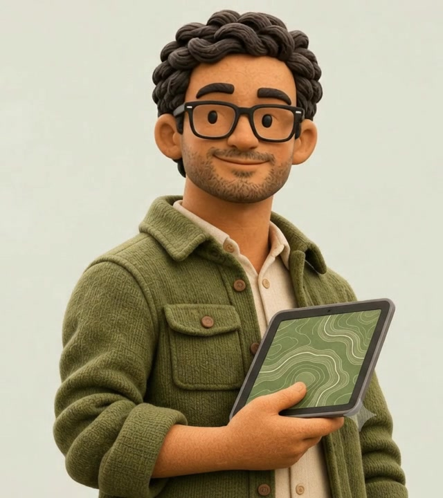

FIELD / DIGITALGIS
Shiv Narayan Yadav
GIS & remote sensing
Conservation. Restoration.
Environmental research.
INDIAContact me
GIS & REMOTE SENSING
I’m Shiv, a GIS and remote sensing specialist working where environmental questions meet geospatial technology.

Shiv Narayan Yadav
Conservation. Restoration.
Environmental research.
I’m Shiv, a GIS and remote sensing specialist working where environmental questions meet geospatial technology.
My work spans Himalayan conservation landscapes, forest restoration in Meghalaya, and ecosystem services in Assam. I build spatial datasets, develop repeatable workflows, and translate complex analysis into maps and information that teams can use.
Projects in conservation, forest restoration, ecosystem services and hydrology.
Explore the places and projects behind my experience.
Markers indicate approximate project regions or an education location, not exact field sites. Coastlines: Natural Earth.
Spatial analysis, automation and environmental assessment.
Land-cover classification, change detection, terrain analysis, spatial modelling, and the integration of satellite, UAV and LiDAR data.
Repeatable geospatial processing, attribute generation, database design and spatial services that help teams work consistently.
ARR eligibility assessment, strata and sampling design, topology checks, MRV-ready datasets, and maps supporting review and verification.
Ecosystem-service and hydrological analysis, clear cartography, technical reports, stakeholder coordination and GIS training.
Co-authored work on conservation landscapes, medicinal plants and remote sensing of aquatic environments.
Khali, Mishra, Yadav, Saber & Pande · Springer Nature
Mishra, Kumar & Yadav · Trees, Forests and People
Singh, Yadav & Lyngdoh · PARKS, 29(2), 31–40
Lyngdoh, Sathyakumar, Bhatnagar, Singh & Yadav · Wildlife Institute of India